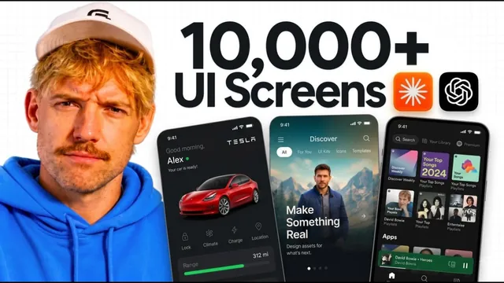

AI에게 UI 화면 1만 장을 먹여봤다

원본 영상 보기 →
- AI에게 "무엇을 원하는지" 대신 "무엇처럼 되길 원하는지"를 보여줘라
- 기능 우선에서 디자인 우선으로 순서가 바뀌었다
- 카피 휴머나이징은 별도 공정이다
한 줄 요약
Jack Roberts가 앱 빌더 Base44 하나만으로, 이미 잘 만들어진 1만여 개의 UI 디자인을 AI에 참고자료로 먹여 "AI 티 나는 허접한 결과물(slop)"을 피하면서 금융 앱을 설계·카피 다듬기·기능 연결·배포까지 네 단계로 완성하는 과정을 보여주는 영상이다(Base44 협찬).
전체 내용 정리
99%의 AI 앱이 허접해 보이는 이유는 디자인 시스템을 안 써서다
Jack은 대부분의 AI 결과물이 조악한 이유를 "올바른 디자인 시스템을 참조하지 않기 때문"으로 본다. 해결책은 AI에게 이미 성공한 UI가 어떻게 생겼는지 보여주는 것이다. Stripe, Apple, Duolingo처럼 완성도 높은 웹사이트·앱 갤러리에서 요소별·사이트별로 검색해 무드보드를 만들면, "내가 원하는 걸 말로 설명할 언어가 없을" 때도 레퍼런스로 방향을 전달할 수 있다. 그는 웹사이트 갤러리, UI 스나이핑(원하는 화면을 저장·수집하는 것) 도구 링크를 영상 설명란에 정리해뒀다고 말한다.
도구는 Base44 하나 — 프롬프트에서 라이브 앱까지
전체 시스템은 네 단계다. ① 빌드·디자인 ② 카피를 사람이 쓴 것처럼 다듬기 ③ 기능 연결 ④ 라이브 배포. Base44는 프롬프트에서 배포까지 앱을 떠나지 않고 처리하고, 모든 주요 모델을 쓸 수 있으며, 자체 모델(base1)도 있다. 자체 모델은 "앱과 웹사이트를 만드는 일에 특화하면 어떨까"라는 시도이고, 오토 모드는 작업에 맞는 최적 모델을 골라 크레딧을 아낀다. Jack은 이번엔 화력을 위해 Fable 5.1을 선택한다.
1단계 — 레퍼런스를 먹여 "Gorilla Finance"를 만든다
Jack은 예산 추적 금융 앱을 구상하고, 마음에 든 Orus 사이트와 다른 몇 개를 캔버스에 모아 무드보드를 만든다. Base44에 "이 디자인들에서 영감을 받은 아름다운 금융 앱을 만들어줘, 이름은 Gorilla Finance, 세련되게"라고 지시하며 링크와 스크린샷을 첨부한다. 로그인 구역과 그 안에서 항목을 편집하는 기능도 요청한다. 그는 이 단계에서 중요한 원칙을 짚는다. 예전에는 "기능을 먼저 완성한 뒤 디자인"이라고 했지만, 이제 AI가 인프라를 눈 감고도 처리하므로 이 단계에서는 디자인이 원하는 방향에 근접했는지와 기본 기능만 확인하면 된다. 결과물은 그라데이션과 호버 애니메이션이 있는 깔끔한 랜딩 페이지, 구글 로그인 화면까지 갖췄다. 계정을 만들어 로그인하니 대시보드가 뜨고, "엔지니어링 예산을 25K에서 500,000으로"라고 수정한 뒤 로그아웃했다 다시 로그인해도 값이 유지됐다. 데이터 연결까지 자동으로 된 것이다.
2단계 — "Slop Monster"로 카피를 사람 글로 바꾼다
Jack은 텍스트가 AI처럼 읽히면 아무도 사지 않는다며, 자신이 만든 Slop Monster라는 도구를 소개한다. 기존의 여러 AI 휴머나이징 리포지토리에서 가장 좋은 부분만 모아, 전형적인 AI 어휘, AI식 문장 구조, 부자연스러운 구두점 리듬, 3의 법칙 반복을 잡아내고, Hormozi·Daniel Priestley·Krug 같은 세일즈·마케팅 원칙에 기반한 예시를 보여준다. Base44에 "이 리포지토리(Slop Monster)의 시스템으로 카피를 개선해줘"라고 시키자, "은행·카드·자금관리를 한 플랫폼에" 같은 문구가 "돈이 어디 있고, 얼마나 빨리 움직이고, 누가 손댈 수 있는지"처럼 구체적으로 바뀌었다. 이어 특정 텍스트가 너무 왼쪽으로 쏠렸다는 피드백을 스크린샷과 함께 주고, 21st.dev·Mobbin 같은 컴포넌트 갤러리에서 마음에 든 "AI 프롬프트 박스"를 골라 프롬프트를 복사해 Base44에 붙여넣어 대화형 컴포넌트를 통합했다. 실제로 "가상 계좌는 어떻게 작동하나?" 같은 질문에 답하는 챗 UI가 웹사이트에 그대로 붙었다.
3단계 — 계정·데이터·연동 연결
Base44 대시보드에서 앱 공개 여부 변경, 사용자 목록 확인·편집·삭제, 데이터 관리, 분석(배포 후 조회수 확인), 도메인, 코드로 내보내기 등이 가능하다. Stripe, Slack, Notion, Google Sheets 등 필요한 시스템에 연결된다. Jack은 Zapier를 인증 레이어로 써서 여러 앱·계정을 연결하고 접근 권한을 토글로 관리한다고 말한다. "신규 가입자 목록을 매일 이메일로 보내줘"라고 하면 Zapier 웹훅 URL을 받는 절차를 안내받고, Stripe를 연결하면 "가입 시 월 10달러를 결제하게 해줘" 같은 요청으로 테스트 결제 시스템이 붙는다.
4단계 — 라이브 배포
우상단 Publish를 누르면 일반 URL이 생기고(모바일 앱도 가능), 새 탭에서 접속해 로그인·대시보드·500,000 한도·Stripe 결제 페이지까지 동작을 확인한다. 대시보드의 도메인 메뉴에서 도메인을 구매·관리하고, 마케팅 메뉴에서 SEO·GEO·소셜 콘텐츠를 다룬다. 21st.dev에서 "결제", "축하 컨페티" 같은 요소를 검색해 원하는 지점에 끼워 넣을 수도 있다. Jack은 마지막으로, 이런 UI 화면들을 잘 쓰려면 디자인 시스템 자체를 이해해야 한다며 별도 강의로 넘어간다.
핵심 인사이트
- AI에게 "무엇을 원하는지" 대신 "무엇처럼 되길 원하는지"를 보여줘라: 원하는 걸 말로 설명할 언어가 없을 때, 이미 성공한 화면을 레퍼런스로 주면 결과 품질이 급격히 올라간다. "왜 중요한가" — 프롬프트를 잘 쓰는 것보다 좋은 참조 자료를 모으는 편이 비전문가에게 더 현실적이다.
- 기능 우선에서 디자인 우선으로 순서가 바뀌었다: AI가 백엔드·데이터 연결을 쉽게 처리하므로, 초기에는 방향성과 기본 동작만 확인하고 인프라는 뒤로 미뤄도 된다.
- 카피 휴머나이징은 별도 공정이다: 화면이 아무리 예뻐도 텍스트가 AI 티가 나면 신뢰를 잃는다. AI 어휘·문장 구조·구두점 리듬·3의 법칙 반복을 걷어내는 단계를 따로 두는 게 표준이 되고 있다.
오늘 당장 해볼 것
- 우리 서비스와 비슷한, 완성도가 높은 웹사이트·앱 화면 5~10개를 캡처해 한 폴더에 모은다. 다음에 홈페이지나 내부 도구를 새로 만들 때 자동화 업체에 "이 레퍼런스들의 느낌으로"라고 전달할 무드보드가 된다.
- 현재 쓰는 웹사이트·랜딩 페이지·안내문의 문구를 훑어보고, "우리는 지역에서 가장 신뢰받는 ○○ 전문가입니다" 같은 공허한 문장을 구체적 사실("2001년부터 ○○만 합니다")로 바꿀 후보 3개를 뽑는다.
- 새 내부 앱이나 자동화를 의뢰할 때 "기능 먼저"가 아니라 "원하는 화면 예시 먼저, 기본 동작 확인, 인프라는 뒤로"의 순서로 진행해달라고 요청한다.